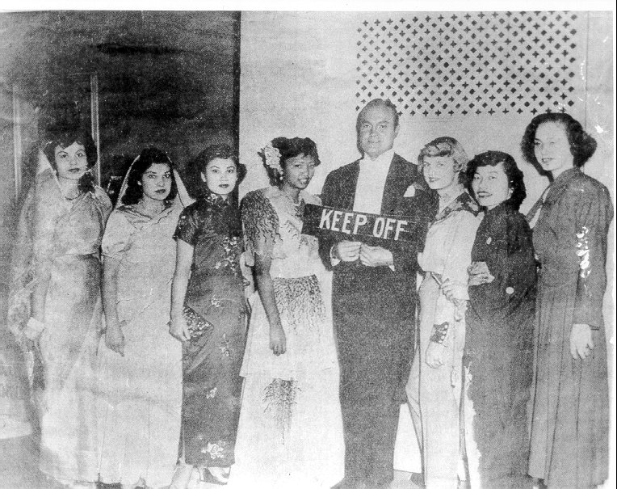

Return to:
This page is under construction
{kind=link}
List of Names at the Pioneer Museum
http://www.imperial.cc.ca.uc/Pioneers
|
|
| Purn Singh Saikhon immigrated from the Punjab region of India to southern California in the early 1900's, hoping only to make money and send it home. Instead, he built a life here. The children and grandchildren of Sikh, Moslem, Hindu and Mexican settlers of the Imperial Valley recall the farms and families their ancestors built - along with the racism misengenation laws and violence they faced. |
Bronze Star Medal Awarded
to
Private Nika S. Gill, 39 117 505, Infantry
|
Scene of a Punjabi Farmer in the early 20th century
|
Short History of Punjabi Pioneers
and Immigration to El Centro |
|
Facts about Punjabi Pioneer Immigration and Farming
|
A Beautiful Peacock on Display
|
|
List of Names of a Muslim Mosque
|
Picture of East Indian Gallery
|
|
Gallery with Map of Indian Subcontinent
|
El Centro Gurdwara
|


Toga Singh Sandhu
(May 15, 1902- November 5, 1996)
Toga Singh Sandhu was born in May 15, 1902 in the village of Manuke in Punjab, India. At the age of fourteen, he left India with his older brother for Hong Kong. After traveling to Shanghai, he was unable to secure employment because he was too young. Finally after about a year, he became a security guard for an apartment and worked there until 1923.
He heard that there is farming jobs available in Mexico and moved to Mexico in December 1923. He was lonely in Mexico. Nine months later he left Mexico and entered the United States. After working as a laborer for fifteen years he received his first paycheck and opened this first bank account. For the next eight years he worked in northern California at Willow, Yuba City Locke, the Sacramento Delta, and Ryde Island. During that time, he traveled with other Indian men in work crews going wherever there was work for agricultural laborers. Eventually he moved to Fresno, where a circus had come to town and was offering jobs. He became a member of a horse riding troupe called the Bengal Lancers. He traveled the country performing with the troupe. The circus disbanded in Washington D. C. in 1939. That year he took his money and moved to Los Angeles.
While in Los Angeles, he opened La India Café and operated this business until 1946. Toga Sing had a lot of friends in the Imperial Valley and they persuaded him to move to the valley and farm. He sold his business and purchased land in the Imperial Valley and started his farming career. Shortly after that he went back to India and married Bachan Kaur. Bachan Kaur came to the United States and the Sandhu family grew to include Charnjeet Kaur, Charn Singh, Kuldeep Singh, and Surinder Kaur. In 1953 Toga Sing became a U. S. citizen and he was very proud of that.
Toga Singh was one of the founders of the El Centro Sikh Temple. It was the second Sikh Temple to be founded in California. He remained an active member of the Sikh Temple for over 50 years and held various positions on its committee. Through the years Toga Singh sponsored many family members so they could immigrate to the United States. His support was not limited to family; but, was also given to many others. He helped provide, school, Industrial Technical Institute and hospital for his village Manuke. In 1979, when Toga Singh visited India, he was awarded and thanked by his village committee.
Although he was unable to attend school, Toga Singh understood the value of education. He made sure all of his kids went to college. After his last child graduated from college, he retired in 1981. He was very fortunate to enjoy good health for most of his life. He passed away on November 5, 1996. He will be remembered as a person with a kind, gentle, and generous heart, as well as his sense of humor. He was well liked and loved by many. All the family and friends appreciated the stories of his life experiences and were constantly amazed by them as well as the detail with which he could tell them. He is loved and missed by many.
Additional Biographies of one or two pages of the following individuals are available in the Pioneer Center http://www.imperial.cc.ca.uc/Pioneers
Nand Singh Chell (Chahal)
1888-1968
Born in Pujab Province, India In December 1912, Nand, Kunda [his youngest brother] and lifelong friend Kakoo Singh, and other future residents of Imperial Valley boarded the S.S. Minnesota and landed in Seatttle, Washington in January 1913. After landing in Washington they joined other East Indians and worked as migrant laborers. On their second trip to Imperial Valley (1916) they settled here and began to farm.
Anna Singh Sandhu
(1921-
Anna Singh Sandhu was born and raised in Imperial Valley. Not only did she participate in the establishment of a farming enterprise as a child and teenager, she continued this endeavor when she got married and also after her husband died.
Charn Singh Sandhu
(1880-1986)
Charn Singh Sandhu was one of Imperial Valley's ethnic pioneers. His journey in search of opportunity began in 1907 when he boarded a ship to Shanghai, China.
Sham Singh
(1888-1971)
Mr. Sham Singh came to the United States in 1906. He left India when he was only 18 years of age.
Purn Singh Saikhon
(1893-1943)
Saikhon immigrated to America from the state of Punjab, India via China were he worked as a police officer to earn his fare for the journey to America.
Inder Singh
(1885-1963)
He left his homeland to come to America in 1917. He arrived in Canada first and worked for the railroad company. He eventually traveled into the United States and worked himself down into the Imperial Valley where he stayed doing field labor.
Sucha Singh Gill
(September 22, 1905-November 19, 1975)
His ship had to turn back and eventually landed in Manzanillo, Mexico in 1924. From there he headed north to Baja California. Over fifteen thousands acres were named Colonia Hindu because of him and other East Indian men who farmed there.
Sucha Singh Garewal
(June 5, 1884-May 1954)
He was the eldest of three children and upon the death of his parents, he assumed the responsibility of raising his younger brother and sister. Nika Singh Gill (July 15, 1906- When World War II began, Nika saw his opportunity. He enlisted and returned from the war with several medals and his U.S. citizenship.
Kakoo Singh
(1900s-1972)
Kakoo Singh left India as a teenager with his Uncle in 1913 and came to America after working a few years as a guard and policeman in Shanghi, China. They arrived in Seattle but then moved to the Stockton area where a colony of Singhs were being established.
Natha Singh
(June 5, 1883-February 4, 1979)
He met the former Hortencia Arias, from Morenci, Arizona, through another East India friend who was married to Hortencia's older sister. They married in Yuma, Arizona on March 31, 1941. Nicka Singh Nicka Singh married Elena Montes Jill on August 1923 in Phoenix, Arizona. Last known information of Nicka Singh was that he left for India and sometime later passed away.
Harmon B. Singh
(December 15, 1880-November 1957)
Harmon B. Singh was admitted to the United States on August 17, 1907 at San Francisco, California.
Phoman Singh Sandhu
(?-January 3, 1943)
He later migrated to the Imperial Valley where he and several other Sikh formed labor pools and worked for different farmers as irrigators and field hands. They would form a partnership between them and have a citizen friend leave a piece of ground to grow crops that ranged from cotton to lettuce.
Kehar Singh Sandu
(1890-1949)
Kehar was married to Regina Virgen who was from Mazatlan, Sinaloa Mexico on March 19, 1925 in San Diego. They lived in several different areas north of Brawley, eventually settling at the Best Canal site across the road from his brother Mota.
Bogga Singh Sunga
(June 21, 1902- July 31, 1988)
Bagga Singh became a U.S. citizen in December 1950. He and his wife remained involved in the affairs of the East Indian community in the Valley, but also contributed to social and educational programs in their villages in India.